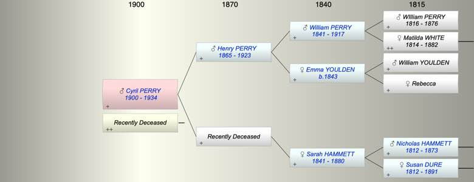

| [Index] |
| Cyril Robert PERRY (1900 - 1934) |
|  |
| b. 16 Mar 1900 at Plymouth |
| m. Late |
| d. 1934 at Plymouth aged 34 |
| Near Relatives of Cyril Robert PERRY (1900 - 1934) | ||||||
| Relationship | Person | Born | Birth Place | Died | Death Place | Age |
| Grandfather | William PERRY | 1841 | Kelly Devon | 1917 | Ontario Canada | 76 |
| Grandmother | Emma YOULDEN | 1843 | Kelly Devon | |||
| Grandmother | Sarah Agnes HAMMETT | 1841 | Plymton | 1880 | 39 | |
| Father in Law | Thomas Alfred MARTIN | |||||
| Mother in Law | Beatrice Elizabeth UNKNOWN | |||||
| Father | Henry PERRY | 1865 | Thurleston | 1923 | Plymouth | 58 |
| Mother | Living or Recently Deceased | |||||
| Self | Cyril Robert PERRY | 16 Mar 1900 | Plymouth | 1934 | Plymouth | 34 |
| Wife | Living or Recently Deceased | |||||
| Brother | Living or Recently Deceased | |||||
| Uncle | George Goodwin BREWER | 27 Jan 1886 | Teignmouth | 1894 | 8 | |
| Aunt | Living or Recently Deceased | |||||
| Uncle | Living or Recently Deceased | |||||
| Aunt | Living or Recently Deceased | |||||
| Uncle | Warwick COX | 22 Sep 1888 | ||||
| Uncle | Stewart G BREWER | 05 Jul 1890 | Teignmouth | 1892 | 2 | |
| Cousin | Living or Recently Deceased | |||||
| Cousin | Harold Edgar COX | 1919 | Teignmouth | |||
| Sister in Law | Living or Recently Deceased | |||||
| Events in Cyril Robert PERRY (1900 - 1934)'s life | |||||
| Date | Age | Event | Place | Notes | Src |
| 16 Mar 1900 | Cyril Robert PERRY was born | Plymouth | Note 1 | ||
| 1923 | 23 | Death of father Henry PERRY (aged 58) | Plymouth | ||
| 1934 | 34 | Cyril Robert PERRY died | Plymouth | ||
| Note 1: ex RAF records Ancestry 1911 census |
| Personal Notes: |
|
1901 census with parents
1911 census with parents There were children reg Newton Abbot but I think the parents were another Perry/Martin marriage and the Perry came from Ireland |
| Created on a Mac™ using iFamily for Mac™ on 15 Sep 2023 |